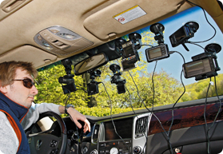

Отличная новость для всех автомобилистов-в
интернет-супермаркете появился новый раздел
автотоваров!Уже сегодня вы можете побаловать себя...

Автомобильный видеорегистратор DVR-530 с углом обзора 120градусов достаточно просто закрепить
на стекле в автомобиле и подключить питание от автомобильного прикуривателя,видеорегистратор
автоматически начнёт записывать,когда
двигатель автомобиля будет включён!
На экране 2,4 (панель экрана можно поворачивать на 270 градусов)можно просматривать отснятые
записи для предоставления доказательств в случае необходимости
Широкий угол обзора 120
градусов гарантирует полноценную записьпроисходящего в пути.Во время
движения в ночное время встроенный ИК-свет будет компенсировать недостаточную освещённость,
поэтому любые инциденты могут быть записаны в достаточно хорошем
качестве.DVR-530 обеспечивает
расширение видео до 1280х960р при скорости 30 кадров в секунду.Литиевый аккумулятор встроеный в